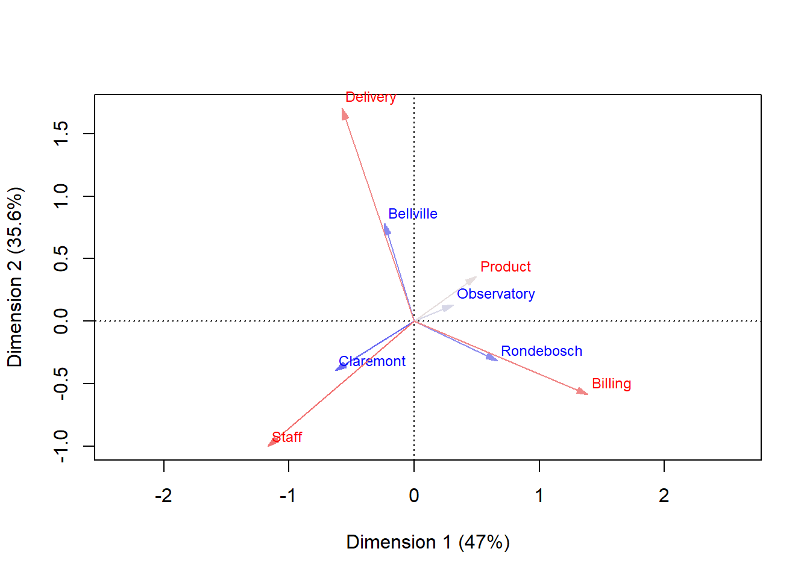
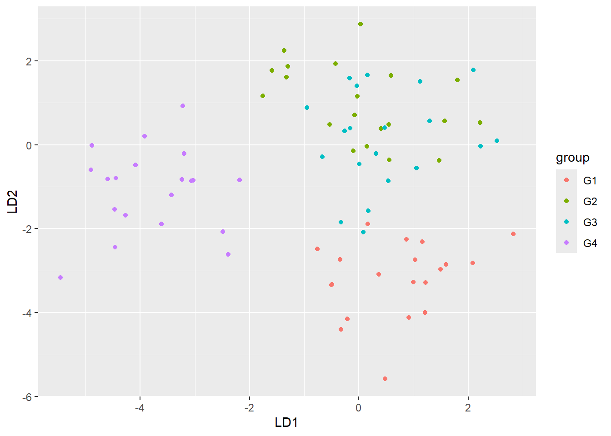

STA2005S — Practice Paper (based on breakdown discussion)
Introduction
library(ca)library(MASS)library(pls)
Attaching package: 'pls'
The following object is masked from 'package:stats':
loadings
library(dplyr)
Attaching package: 'dplyr'
The following object is masked from 'package:MASS':
select
The following objects are masked from 'package:stats':
filter, lag
The following objects are masked from 'package:base':
intersect, setdiff, setequal, union
library(ggplot2)library(knitr)
Instructions
To start:
Place this file in a project folder alongside a data/ subfolder containing: pollution_data.csv, complaints_data.csv, yield_data.csv, student_data.csv, pcr_pls_data.csv, lda_data.csv.
Open this .qmd in RStudio and render periodically to check it works.
Desired answers
Each question has leading indicators telling you what should be reflected in your write-up:
R code: your R code should be typeset (echo = TRUE). Where a question says “from first principles”, you must obtain the output using the underlying formulae rather than a wrapper function (e.g. not lm(), not lda()), unless a part explicitly allows a package function for cross-checking.
Plot: display a plot with labelled axes.
Table: display a table (kable() is fine, but not required).
Typed response: a short paragraph-style answer, typically one mark per point made.
Exam composition
Section
Topic
Marks
Q1
Factor Analysis
13
Q2
Correspondence Analysis
6
Q3.1
Regression
5
Q3.2
Canonical Correlation Analysis (first principles)
7
Q3.3
PCA / PCR / PLS
15
Q3.4
Fisher’s LDA / CDA
12
MCQ
Multiple choice
5
Total available
63
Marked out of
60
You have five hours to complete the exam.
library(dplyr)library(knitr)library(ggplot2)
Question 1 — Factor Analysis (13)
We use data/pollution_data.csv: 150 days of measurements on 8 air-quality and weather variables (no2, so2, co, pm10, temp, humidity, windspeed, pressure).
R code + typed response: Motivate why these data should be standardised before factor analysis. Standardise the data. (2)
This data needs to be standardised as the data is on a lot of different scales froe example temp is in celsius while things like no2 are in a completely different type of measurement. Pressure is also an incredibly high values compared to the other variables and we dont want that to play a part in our model, so we standardise.
R code + table: From first principles, using the correlation matrix and its eigendecomposition, extract the first factor only via the principal-component method. Report its loadings, the communalities, and the proportion of total variance it explains. (4)
R code + table: From first principles, calculate Bartlett’s WLS factor scores for the two-factor ML solution above, i.e. \[\hat{\mathbf{F}} = (\hat{\mathbf{L}}'\hat{\boldsymbol{\Psi}}^{-1}\hat{\mathbf{L}})^{-1}\hat{\mathbf{L}}'\hat{\boldsymbol{\Psi}}^{-1}(\mathbf{x}-\bar{\mathbf{x}})\] Display the first six rows of scores. (4)
psi = FA$uniquenessespsi_inv =diag(1/psi)A =solve(t(L_ml) %*% psi_inv %*% L_ml)B = A %*%t(L_ml) %*% psi_invZ =scale(pollution)F_scores = Z %*%t(B)kable(head(F_scores), digits =4)
Factor1
Factor2
1.1079
-2.2189
-0.7895
-1.7441
0.9887
0.0347
0.8740
0.9744
1.2688
0.3429
-0.3956
0.1469
## for extra, reconstruct data from afctor scoresreconst = (F_scores %*%t(L_ml)) * col_sd + col_meanskable(head(reconst))
no2
so2
co
pm10
temp
humidity
windspeed
pressure
59.3493449
18.7202609
26.37560
1.212753
36.8199376
10.6573645
13.84984
0.6733942
17.4563373
1013.8443405
66.64105
64.627297
7.7291609
1004.7486330
49.62603
33.7211854
0.9387825
46.8582946
14.99932
21.234932
0.9495387
47.1922008
13.94906
21.1523225
57.7207617
16.1281497
1013.99382
64.967989
73.6675544
20.4364065
1018.02716
78.6143533
21.3598055
0.9410838
48.20511
14.848877
23.4171992
0.9999932
47.84755
16.3010734
60.9756274
52.5023870
13.67090
1010.576722
62.8061886
54.3516221
14.94951
1011.7976973
kable(head(reconst == pollution), digits =4)
no2
so2
co
pm10
temp
humidity
windspeed
pressure
FALSE
FALSE
FALSE
FALSE
FALSE
FALSE
FALSE
FALSE
FALSE
FALSE
FALSE
FALSE
FALSE
FALSE
FALSE
FALSE
FALSE
FALSE
FALSE
FALSE
FALSE
FALSE
FALSE
FALSE
FALSE
FALSE
FALSE
FALSE
FALSE
FALSE
FALSE
FALSE
FALSE
FALSE
FALSE
FALSE
FALSE
FALSE
FALSE
FALSE
FALSE
FALSE
FALSE
FALSE
FALSE
FALSE
FALSE
FALSE
Typed response: Based on the loadings, suggest a name for each factor. (1)
no
Question 2 — Correspondence Analysis (6)
We use data/complaints_data.csv: complaint counts (Billing, Staff, Product, Delivery) logged at four store branches.
plot(ca_obj, map ="rowprincipal", contrib ="absolute", arrows =c(TRUE, TRUE), mass =TRUE)

Typed response: Interpret the plot. Use language such as “drives separation along” or “contributes to inertia” rather than “associated with”. (2)
Since this is a symmetric biplot and both cols and rows are plotted using principal coordinates we can only compare rows to rows and cols to cols no inter comparison. When looking at the rows dim 1 which explains 47% of the inertia drives seperation for observatory and rondebosch from claremont and bellville. Dim2 which explains 35% of the inertia seperates Claremont and Rondebosch from Observatory and Bellville. Similar stuff can be said about the cols. Obs and Product are closets to the origin and thus have the least deviation from what they would look like under independance.
R code + table: Using summary(ca(complaints)), identify which branch contributes most to the inertia of the first dimension, and report its mass, quality (qlt), and contribution (ctr) on that dimension. (2)
R code + table: From first principles, fit a multivariate… (here, simple) linear regression of yield on soil_ph and rainfall. Display the estimated regression coefficients. (2)
We use data/student_data.csv: an “academic” set of variables (\(X^{(1)}\): gpa, test_score, attendance, study_hrs) and a “lifestyle” set (\(X^{(2)}\): sleep_hrs, exercise_hrs, stress).
R code + output: From first principles, obtain the first canonical correlation and the associated coefficient vectors \(\mathbf{a}_1\), \(\mathbf{b}_1\). (3)
R code + plot: Standardise the predictors, perform PCA from first principles, and produce a scree plot. State how many components you would retain. (3)
dat_scaled =scale(pcr_dat[,1:10])pc_cor =cor(dat_scaled)eig_pc =eigen(pc_cor)prop = eig_pc$values /sum(eig_pc$values)plot(prop, type ="o")
R code + table: From first principles, fit principal component regression (PCR) of y on your retained components. Report \(R^2\).
X =cbind(1, scores)Y =as.matrix(scale(pcr_dat[,11]))X_inv =solve(t(X) %*% X)Bhat_pc = X_inv %*%t(X) %*% YYhat = X %*% Bhat_pcSSE =t(Y) %*% Y -t(Yhat) %*% Yhatn =nrow(Yhat)ybar =mean(Y)SST =t(Y) %*% Y - n * ybar^2R_pcr =1- SSE / SSTR_pcr
[,1]
[1,] 0.6805692
R code + table: Fit a partial least squares (PLS) regression of y on the ten predictors using the pls package, with the same number of components. Report \(R^2\). (4)
Typed response: Compare the \(R^2\) values from PCR, PLS, and a full multiple regression using all ten predictors. Explain why PLS typically needs fewer components than PCR to achieve comparable predictive performance. (4)
Soemthing about it maximising its correlation with Y, and how RSS is calculated off of YHat and thus PLS should produce more optimised Ys as it is directly optimised
3.4 — Fisher’s LDA / CDA (12)
We use data/lda_data.csv: four groups (G1–G4), 20 observations per group, and 6 variables (x1–x6).
R code: From first principles, code up the full Fisher’s LDA algorithm: compute \(\mathbf{B}\) and \(\mathbf{W}\), obtain the eigendecomposition of \(\mathbf{W}^{-1}\mathbf{B}\), and scale the eigenvectors so that \(\mathbf{a}_k'\mathbf{S}_{pooled}\mathbf{a}_k = 1\). Display the resulting discriminant loadings. (6)
X =as.matrix(lda_dat[,-1])lda_dat$group =as.factor(lda_dat$group)g =length(unique(lda_dat$group))n_i =table(lda_dat$group)W =matrix(0, ncol(X), ncol(X))B =matrix(0, ncol(X), ncol(X))overall_means =colMeans(X)group_means = lda_dat %>%group_by(group) %>%summarise(across(everything(), mean), .groups ="drop") %>% dplyr::select(-group) %>%as.matrix()for(i in1:g){ diff = group_means[i,] - overall_means B = B + n_i[i] * (diff %*%t(diff)) Xi = X[as.integer(lda_dat$group) == i,] W = W +cov(Xi) * (nrow(Xi) -1)}eig_lda =eigen(solve(W) %*% B)vec = eig_lda$vectors %>%Re()Spooled = W / (sum(n_i) - g)sd =diag(sqrt(t(vec) %*% Spooled %*% vec))
Warning in sqrt(t(vec) %*% Spooled %*% vec): NaNs produced
dat_org$LD1 = X_org %*% lda_fit$scaling[,1]dat_org$LD2 = X_org %*% lda_fit$scaling[,2]ggplot(dat_org, aes(x = LD1, y = LD2, col = group)) +geom_point()

R code + plot + typed response: Compute the discriminant scores and produce a scatterplot of the first two discriminants, coloured by group. Using the loadings, interpret the plot: state which discriminant separates which group(s), and which variables are driving that separation. (4)
Overall G1 and G4 are seperated well while G2 and G3 are homogenous. We see that LD1 drives G4 to seperate from the other 3 groups. This seperation is driven strongly by x4 in the negative direction. pushing G4 away from the other groups. LD2 seperates G1 from G2 while having the other groups somewhat in the middle. This seperation is driven by x1 which is in the positive direction
Typed response: Fisher’s LDA as coded in (a) will not always work. Describe, in general, the condition under which the algorithm breaks down, and why. (2)
Since we have to fidn the inverse for W the algorithm will break when W is singular. This will occur when the Within variation produces a singular matrix. the circumstances underwhcih this would happen is if we have too few observations per group when compared to the total number of variables.
Multiple choice (4)
Question A (1) Suppose there is no correlation between any variables from two sets of variables. If we applied canonical correlation analysis, what would the values of the left canonical variate loadings be for the first pair?
Arbitrary, i.e. any vector in \(\mathbb{R}^p\) that preserves unit variance
0
Impossible to say
Proportional to a vector with \(1/\sqrt{p}\) in every entry
Question B (1) Which scenario is likely to result in the largest canonical correlation, all other things being equal?
\(X^{(1)}: 1 \times 1\) and \(X^{(2)}: 1 \times 1\)
\(X^{(1)}: 10 \times 1\) and \(X^{(2)}: 1 \times 1\)
\(X^{(1)}: 10 \times 1\) and \(X^{(2)}: 10 \times 1\)
\(X^{(1)}: 10 \times 1\) and \(X^{(2)}: 100 \times 1\)
Question C (1) Suppose we post-multiply the loadings matrix of an orthogonal factor analysis by some orthonormal \(\mathbf{Q}\). What happens to the implied factors?
Unchanged, as \(\mathbf{Q}\) is orthonormal
Unchanged, as the factors are never observed
Pre-multiplied by \(\mathbf{Q}'\) (i.e. become \(\mathbf{Q}'\mathbf{F}\))
Post-multiplied by \(\mathbf{Q}'\) (i.e. become \(\mathbf{F}\mathbf{Q}'\))
Question D (1) In Fisher’s LDA, if the pooled within-group SSCP matrix \(\mathbf{W}\) is singular, which of the following is true?
LDA can proceed exactly as usual since \(\mathbf{B}\) is unaffected
Some form of dimension reduction or regularisation is needed before \(\mathbf{W}\) can be inverted
\(\mathbf{B}\) automatically becomes full rank to compensate
The discriminant functions default to the first principal component only
Question E (1) A PCA scree plot is essentially flat (all eigenvalues are roughly equal in size). What does this suggest?
The variables are highly correlated, so a single PC will suffice
The variables are close to uncorrelated with similar variances, so there is little redundancy for PCA to exploit and dimension reduction will not help much
The data should not have been standardised before running PCA
The first PC will still explain more than 90% of the total variance